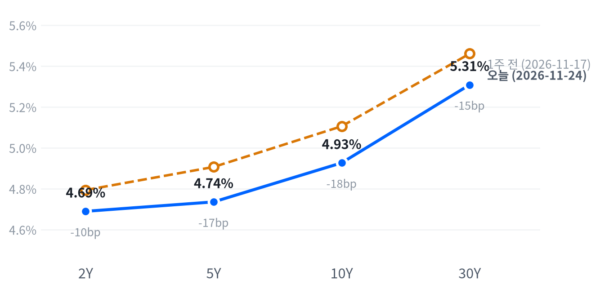

늦게 올린 글 · 2026년 11월 27일
젠슨 황 복귀로 급반등한 다음 날 AI 하드웨어가 되밀려 기술 업종이 3.26% 내렸다. 나스닥 하락은 거의 전부 개장 갭에서 나왔고, 다우·러셀 2000과 헬스케어·필수소비재는 올라 매도가 시장 전체로 번지지는 않았다.
하루 자료로는 전날 반등의 일부 반납인지, AI 부채 불안·마진 경고라는 새 악재가 붙은 것인지 구분하기 어렵다. 국채 금리가 거의 움직이지 않아 금리가 주가를 누른 날은 아니었고, 11월 25일 PCE 물가·GDP와 델 실적 뒤 하드웨어 반응이 다음 확인 자료다.
11월 24일 미국 증시는 젠슨 황 복귀로 급반등한 지 하루 만에 AI 하드웨어가 되밀린 날이다. 기술 업종(XLK)이 3.26% 내리고 엔비디아가 5.86% 밀렸지만, S&P 500 11개 업종 가운데 9개가 올라 다우와 러셀 2000은 상승으로 끝났다. HPE와 아날로그 디바이시스가 두 자릿수로 급락했고, 황 CEO가 돌아와 엔비디아가 신생 클라우드 기업에 자금 지원을 이어 갈 수 있다는 우려에 AI 부채 시장이 흔들렸다는 보도가 나왔다.
나스닥의 하루 하락은 개장 갭과 거의 같은 크기였고, 정규장 안에서는 시가 부근으로 되돌아와 끝났다. 전날 상승도 거의 전부 개장 갭에서 나왔던 만큼, 우리는 이날 움직임을 전날 매도 포지션 되감기의 일부 반납으로 본다. 금리는 이 움직임에 끼어들지 않았다. 10년물 금리가 0.2bp 오르는 데 그쳐, 뉴욕 16:00 무렵 기준 하루 변화로는 할인율이 올라 성장주가 눌렸다는 설명을 뒷받침하기 어렵다. 키움증권 김승혁 연구원은 11월 3주 필라델피아 반도체지수가 17.1% 급락한 반면 S&P 500 12개월 선행 EPS는 2.7% 오르는 데 그쳐, 펀더멘털 악화보다 수급 공백이 낙폭을 키웠다고 진단했다. 가장 강한 반론은 새 악재가 붙었다는 설명이다. 코어위브의 5년 CDS가 1,200bp를 넘고 오라클·메타·아마존의 CDS도 벌어졌다는 보도가 나왔고, 하락은 메모리·스토리지·장비주까지 번졌다. 엔비디아 지배구조라는 단일 재료보다 업종 전반의 재평가와 맞는 모습이다. 이 업종들은 전날 함께 크게 올랐던 종목이라 되감기 설명과도 어긋나지 않아, 하루 가격만으로는 두 설명을 구분하기 어렵다. 옵션·포지션 측정치를 구하지 못해 시장이 어느 쪽을 가격에 넣었는지도 모른다.
반도체·AI 하드웨어 업종의 상대수익률은 전날 회복분의 일부를 돌려줬고, 필수소비재·헬스케어 같은 방어 업종의 상대 강세는 이어졌다. 이 하루로 새 아이디어를 내지 않는다. 두 설명을 구분할 자료가 아직 없고, 11월 26일 추수감사절 휴장과 27일 조기 폐장이 끼어 거래가 얇다. 판단의 시계는 12월 4일까지이고, 그 전에 11월 25일 08:30(ET) PCE 물가·GDP·실업수당 발표와 같은 날 정규장의 델 실적 반응이 먼저 온다. XLK나 반도체 ETF로 S&P 500 대비 상대 강도를 표현하는 비용은 차입·옵션 자료가 없어 따지지 못한다. 원화 현금과 단기채 쪽에서는 2년물 금리가 1.7bp 오르는 데 그쳐, 미국 단기 금리가 이번 주 정책 경로 변화를 아직 보여 주지 않는다.
하이일드 스프레드가 다시 벌어지는데 XLK가 S&P 500보다 계속 처지면 포지션 되감기만으로는 설명하기 어려워지고, AI 부채 불안이 붙은 업종 재평가를 우선 설명으로 보고 해석을 수정한다. 반대로 스프레드가 좁혀지고 하드웨어가 델 실적에 반등하면 새 악재 설명이 약해진다. 11월 23일에 세운 판단의 확인 기준은 그대로다. 11월 23일 종가 대비 12월 4일 종가의 XLK 누적 등락률에서 S&P 500 누적 등락률을 뺀 값이 -3.44%p 이하이면 판단을 뒷받침하고, +3.44%p 이상이면 판단이 약해져 불확실성 제거에 따른 재평가를 우선 설명으로 본다. 첫날 이 값은 -2.76%p다. 이 값이 내려가는 것은 되감기 설명과 새 악재 설명 모두와 맞아, 둘을 가르는 관측은 신용 스프레드다.
출처: CNBC
| 지수 | 종가 | 등락 | 기준일 |
|---|---|---|---|
| 닛케이225 | 58,644.63 | +3.91% | 11월 24일 |
| 항셍 | 22,219.65 | -0.73% | 11월 24일 |
| 상해종합 | 3,548.37 | +0.27% | 11월 24일 |
| DAX | 25,017.81 | -1.26% | 11월 24일 |
| FTSE100 | 10,467.07 | -0.13% | 11월 24일 |
| 유로스톡스50 | 6,003.76 | -1.16% | 11월 24일 |
| VIX | 26.36 | -0.26p | 11월 24일 |
여섯 지수와 VIX는 모두 11월 24일 값이다. 닛케이225는 11월 23일 일본 휴장으로 11월 20일 종가 대비다. VIX 등락은 포인트다.
아시아는 미국과 엇갈렸고, 지역 안에서도 갈렸다. 닛케이225가 휴장 뒤 첫 거래일에 전날 미국의 AI주 반등을 받아 3.91% 뛴 반면 항셍은 0.73% 내렸다. 유럽은 DAX가 1.26%, 유로스톡스50이 1.16% 내려 미국 개장 전 약세를 먼저 보였고, 미국이 그 흐름을 이었다.
밤사이 S&P 선물(ES)은 전날 20:00(ET) 7,298에서 고점을 찍은 뒤 08:00(ET) 7,145까지 밀렸고, 나스닥100 선물(NQ)도 같은 시각 26,142에서 저점을 찍었다. 현물은 S&P 500이 0.90%, 나스닥이 1.51%, 러셀 2000이 0.37% 낮게 출발했다. 유럽 증시가 밀리던 시간이었지만 08:00 저점에 맞물린 특정 재료는 확인되지 않았다.
지수는 내렸지만 S&P 500 구성 종목에 같은 비중을 적용하면 올랐다. 동일가중 지수의 수익률이 시가총액가중 지수보다 1.02%p 높았다는 뜻이다. 이는 시가총액 비중이 큰 종목들의 약세가 지수 하락에 상대적으로 크게 작용했을 가능성을 시사한다. 세 지수는 고점권도 저점권도 아닌 하루 범위의 가운데쯤에서 끝났다.
저점권·고점권 경계는 S&P 500·나스닥·러셀 2000 지수 3개의 일별 관측값 2,256개로 다시 잰 기준이다. 종가가 그날 고가와 저가 사이 어디에서 끝났는지를 날마다 재어 모으고, 그 관측값을 낮은 순으로 세웠을 때 아래에서 4분의 1 지점과 위에서 4분의 1 지점을 경계로 삼는다. 종가 위치가 위쪽 경계 이상이면 고점권, 아래쪽 경계 이하면 저점권 마감이다.
AI 하드웨어의 되밀림이 지수를 끌어내렸고, 다른 자산은 이를 따라가지 않은 날이다. 국채 금리는 거의 그대로였고 VIX도 조금 내렸다. 달러는 금리와 관계없이 약해졌고 금은 달러 약세에도 크게 밀려, 두 움직임 모두 원인을 짚는 자료가 없다. 델은 장 마감 뒤 실적을 내놓아 정규장 하락과는 시점이 다르다.
| 지수 | 종가 | 등락률 |
|---|---|---|
| 다우존스 | 50,018.70 | +0.85% |
| 러셀2000 | 2,684.94 | +0.57% |
| S&P500 가치주 | 234.33 | +0.52% |
| S&P500 | 7,201.09 | -0.50% |
| 나스닥 | 23,733.54 | -1.48% |
| S&P500 성장주 | 124.56 | -1.49% |
| 섹터 | 등락률 |
|---|---|
| 헬스케어 | +2.95% |
| 필수소비재 | +1.66% |
| 부동산 | +1.31% |
| 에너지 | +0.97% |
| 금융 | +0.83% |
| 커뮤니케이션서비스 | +0.82% |
| 경기소비재 | +0.68% |
| 소재 | +0.54% |
| 유틸리티 | +0.18% |
| 산업재 | -0.53% |
| 기술 | -3.26% |
하락은 깊었지만 기술 업종에 몰렸다. S&P 500은 0.50% 내린 7,201.09, 나스닥은 1.48% 내린 23,733.54로 끝난 반면 다우는 0.85% 오른 50,018.70, 러셀 2000은 0.57% 올랐다. S&P 500의 하루 움직임은 평소보다 작았다. 성장주가 1.49% 내리는 동안 가치주는 0.52% 올라 스타일이 정반대로 갈렸다.
정규장 전체로는 시가에서 거의 움직이지 않았지만, 장중에는 개장 갭 뒤에도 매도가 한 차례 더 나왔다가 되돌려졌다. 나스닥은 오전 한때 더 밀렸다가 되돌려 시가 23,727 부근에서 끝났고, S&P 500은 오후 1시 전날 종가 7,237에 닿았지만 넘지 못했다. 엔비디아는 시가 159.76달러에서 오전 중 150.50달러까지 밀린 뒤 155.38달러로 끝나, 갭 뒤에도 매도가 한 차례 더 나왔다.
지수 하락은 기술 한 업종이 거의 다 만들었다. 추정 기여도로 기술이 -1.10%p를 만들어 지수 하락 0.50%보다 컸고, 헬스케어 +0.28%p, 커뮤니케이션서비스 +0.11%p, 경기소비재와 금융 각 +0.09%p가 이를 일부 메웠다. 나머지 업종은 합쳐서 지수를 끌어올렸다. 설명되지 않는 부분은 -0.02%p다. 가장 많이 오른 헬스케어에서는 사노피가 인스메드를 410억 달러(주당 175달러 현금)에 인수하기로 합의해 인스메드가 14.1% 올랐다는 보도가 나왔지만, 업종 전반의 상승을 이 거래와 잇는 자료는 없다.
추정 기여도는 업종 비중을 직접 받지 않아, 최근 252거래일 지수·업종 수익률로 추정한 비중을 곱한 값이다. 소재와 부동산은 비중을 추정할 수 없어 빠졌다.
같은 비중 기준으로는 지수가 올랐고 11개 업종 가운데 9개가 올라, 이 하락을 시장 전체의 위험 회피로 읽기는 어렵다. 전날 급등이 시가총액가중 지수 쪽에 치우쳤던 것과 같은 자리, 곧 시가총액이 큰 AI 하드웨어 종목에서 이날 하락이 나왔다.
출처: CNBC
| 만기 | 종가 | 전일比(bp) | 1주 전 | 주간 변화(bp) |
|---|---|---|---|---|
| 2Y | 4.689% | +1.7 | 4.793% | -10.4 |
| 5Y | 4.735% | -0.2 | 4.906% | -17.1 |
| 10Y | 4.926% | +0.2 | 5.105% | -17.9 |
| 30Y | 5.308% | +1.5 | 5.460% | -15.2 |
국채 금리는 뉴욕 16:00 ET 무렵 장중 값(전 거래일·1주 전도 같은 시각)이다. 장 마감 종가와 다를 수 있다. 1주 전 값은 트레이드웹(CNBC) 기준이다.
주식이 업종 사이에서 크게 갈린 날 국채 금리는 거의 움직이지 않았다. 2년물은 1.7bp 오른 4.689%, 10년물은 0.2bp 오른 4.926%로 끝나 하루 움직임이 평소보다 훨씬 작았다. 10년물은 최근 2년(504거래일) 가운데 이보다 높았던 날이 46일뿐인 높은 수준에 머물러 있다.

커브 차트의 「오늘」은 11월 24일, 「1주 전」은 11월 17일의 뉴욕 16:00 ET 무렵 값이다. 1주 전보다 2년물은 10.4bp, 10년물은 17.9bp, 30년물은 15.2bp 낮다.
하루로는 2년물이 10년물보다 1.5bp 더 오른 소폭의 베어 플래트닝이다. 2s10s는 23.7bp(전일 25.2bp)로 좁혀졌고 5s30s는 57.3bp다. 1주 전과 비교하면 10년물과 5년물이 각각 17.9bp, 17.1bp 내려 가장 많이 내렸고 2년물은 10.4bp로 가장 덜 내려, 커브는 한 주 전보다 불 플래트닝된 모양이다. 2s10s는 1주 전 31.2bp에서 7.5bp 좁혀졌다.
명목금리를 실질금리와 기대인플레로 나눈 최신 자료는 11월 23일 것이다. 그날 10년물은 실질금리가 2bp 오르고 기대인플레가 2bp 내려 명목으로는 움직이지 않았고, 5년물 3bp 상승은 실질금리 6bp 상승이 기대인플레 3bp 하락을 넘어선 결과다. 주식이 급반등한 날 실질금리가 오르고 기대인플레가 내린 조합이라, 그날의 금리 변화는 물가 기대보다 실질금리 쪽에서 나왔다. 여기서 기대인플레는 명목에서 실질을 뺀 값이라 위험·유동성 프리미엄도 섞여 있다.
하이일드 스프레드는 11월 23일 3.63%로 하루 13bp 좁혀졌지만 5거래일로는 29bp 넓어진 상태다. AI 부채 시장 불안이 보도된 11월 24일 값은 아직 없어, 회사채 시장이 그 보도를 어디까지 받아들였는지는 다음 갱신에서 확인한다. 10년 기간프리미엄은 11월 20일 0.89%로 5거래일 동안 9.8bp 내렸다.
5년 뒤 5년 명목금리는 5.10%, 실질 2.99%다(11월 23일 기준). 기대인플레 쪽 수치와도 맞고, 위험 프리미엄이 섞인 값이다.
| 입찰 | 규모 | 낙찰 | 응찰배율 | 간접 | 직접 | 딜러 | 판정 |
|---|---|---|---|---|---|---|---|
| 2년 FRN 재발행 | 280억 달러 | 할인마진 0.050% | 2.87배 (3.11배) | 60.7% (66.6%) | 0.7% (0.3%) | 38.6% (33.1%) | 수요 약함 |
| 5년물 | 700억 달러 | 4.719% | 2.37배 (2.31배) | 54.3% (61.9%) | 36.7% (25.4%) | 9.0% (12.6%) | 수요 강함 |
재무부는 11월 24일 5년물 700억 달러를 4.719%에 팔았다. 규모는 직전 같은 만기 입찰(10월 27일)의 700억 달러와 같았다. 응찰배율은 2.37배로 직전 6회 평균 2.31배보다 0.06배 높았고, 딜러 비중은 9.0%로 평균보다 3.6%p 낮았다. 해외 중앙은행·기관 수요의 대용인 간접 낙찰 비중은 54.3%로 평균보다 7.6%p 낮았고, 직접 낙찰이 36.7%(평균 25.4%)로 그 자리를 채웠다. 응찰배율이 평균보다 높고 딜러가 떠안은 몫이 줄어 수요 강함으로 본다. 해외 수요의 대용인 간접 비중이 줄었다는 점은 그 판정 안에 남는 단서다. 5년물 금리는 16:00 ET 무렵 4.735%로 0.2bp 내리며 끝났다.
같은 날 2년 FRN 재발행 280억 달러는 할인마진 0.050%에 낙찰됐다. 규모는 직전 같은 만기 입찰(10월 28일)의 300억 달러보다 줄었다. 응찰배율은 2.87배로 직전 6회 평균 3.11배보다 0.24배 낮았고, 딜러 비중은 38.6%로 평균보다 5.5%p 높았다. 간접 낙찰 비중도 60.7%로 평균보다 5.9%p 낮았다. 최종 투자자가 가져간 몫이 줄고 딜러가 더 많이 떠안은 입찰이라 수요 약함으로 본다.
| 통화쌍 | 종가 | 등락률 | 기준일 |
|---|---|---|---|
| DXY | 103.822 | -0.50% | 11월 24일 |
| USD/KRW | 1,341.88 | +0.00% | 11월 24일 |
| USD/JPY | 159.24 | +0.19% | 11월 24일 |
| EUR/USD | 1.0969 | +0.59% | 11월 24일 |
달러가 금리와 따로 약해졌다. 달러지수는 0.50% 내린 103.822로 최근 2년(504거래일) 가운데 높은 쪽 18% 안에 머물렀다. 원/달러는 1,341.88로 거의 움직이지 않았고, 같은 기간 가운데 이보다 낮았던 날이 29일뿐인 수준이다.
달러지수 하락은 평소 하루 움직임의 1.6배로 이날 크게 움직인 자산 가운데 하나지만, 원인은 확인되지 않았다. 미국 2년물 금리는 1.7bp 올랐고, VIX도 0.26p 내리는 데 그쳐 위험선호 변화로 설명하기도 어렵다. 유로가 0.59% 올라 주요 통화쌍 가운데 가장 크게 움직였지만 유로 쪽 재료는 확인하지 못했다. 엔은 오히려 약해져 달러-엔은 0.19% 오른 159.24다. 달러 약세가 유로 고유의 재료였는지 달러 전반의 매도였는지는 다음 거래일 다른 통화의 움직임과 함께 확인한다.
환율은 뉴욕 16:00 ET 가격, 전 거래일 같은 시각 대비다. 결제가와 다를 수 있다. 달러지수의 하루 움직임은 최근 60거래일 평균 하루 변동 대비 1.6배다.
| 품목 | 종가 | 등락률 |
|---|---|---|
| WTI | $81.44 | +1.56% |
| Brent | $88.29 | +1.92% |
| 천연가스 | $3.686 | +4.69% |
| 금 | $3,551.50 | -2.31% |
금이 달러 약세에도 급락했다. 금은 2.31% 내린 3,551.50달러로 평소 하루 움직임의 1.5배를 움직였고, 유가는 반대로 올랐다. WTI는 1.56% 오른 81.44달러, 브렌트는 1.92% 오른 88.29달러다.
금 하락은 달러가 약해진 날 나와 달러로는 설명되지 않는다. 금은 아침 7시 30분(ET) 3,651.4달러 고점에서 장 마감 직전 3,545.4달러 저점까지 하루 내내 밀려 저점 부근에서 끝났다. 10년 실질금리의 최신 값은 11월 23일의 2bp 상승이라 이날 하락과는 기준일이 다르다. 원인을 짚은 보도는 확인되지 않았고, 11월 24일 실질금리가 갱신되면 보유비용 쪽 설명이 남는지 확인할 수 있다.
브렌트는 WTI보다 6.85달러 높다. WTI는 아시아 시간 79.07달러 저점에서 오후 82.13달러 고점까지 올랐다가 일부를 내주고 끝났다. 이란 혁명수비대가 호르무즈 해협에서 유조선 3척이 기뢰에 부딪혔다고 밝혔고 미 재무부가 이란 그림자 금융망 제재를 넓혔다는 보도, 푸틴 대통령이 우크라이나의 정유시설 공격에 보복이 불가피하다고 경고했다는 보도가 나왔다. 장중 상승을 이 재료와 직접 잇는 보도는 확인되지 않았다. 천연가스는 4.69% 올랐다.
원자재·환율은 뉴욕 16:00 ET 가격, 전 거래일 같은 시각 대비다. 결제가와 다를 수 있다. 금의 하루 움직임은 최근 60거래일 평균 하루 변동 대비 1.52배다.
출처: CNBC, Al Jazeera
반도체·AI 하드웨어 업종의 약세를 키운 종목들이다. 엔비디아가 5.86% 내렸고 아날로그 디바이시스(-17.37%), 텍사스 인스트루먼트(-11.25%), 마이크론(-11.01%), 모놀리식 파워 시스템즈(-10.77%), 마벨(-9.10%), AMD(-8.86%), 인텔(-8.15%), NXP 반도체(-6.50%)가 함께 밀렸다. 전날 함께 크게 올랐던 아날로그 반도체까지 두 자릿수로 내렸다. 시장 일각에서는 개장 전 골드만삭스가 황 CEO 복귀가 엔비디아 상승을 이끌지는 않는다는 시각을 제시했고, 미국이 엔비디아 스캔들의 중심인 메가스피드와 알리바바 싱가포르 자회사를 블랙리스트에 올렸으며, HPE가 실적이 예상을 웃돌았지만 클라우드·AI 부문 마진 하락을 경고해 10% 떨어졌다는 소식을 전하는 의견이 나왔다. 아날로그 디바이시스는 사상 최대 실적을 거뒀지만 다음 분기 마진 둔화와 재고 증가, 생산능력 병목이 단기 리스크로 지목되며 17% 하락 마감했다는 시각도 전해졌다. 텍사스 인스트루먼트·모놀리식 파워 시스템즈·NXP 반도체의 개별 재료는 확인되지 않았다. AI 인프라 관련주의 최근 20거래일 초과수익 -21.99% 가운데 반도체 축의 몫이 -22.69%로, 이 묶음의 약세는 반도체 업종 전반과 함께 움직인 몫으로 거의 설명된다.
AI 인프라 관련주의 초과수익은 성장−가치·대형−소형·반도체 세 축으로 나눈 값이고, 시장 베타는 3.08이다. 20거래일 초과수익은 하루치 초과수익을 더한 값이다.
애플은 1.43% 올라 지수를 받친 대형주였다. 확인된 재료는 없다.
일라이 릴리는 3.15% 올라 헬스케어 업종의 강세에 힘을 보탰다. 확인된 재료는 없다.
하드웨어·스토리지 종목도 크게 밀렸다. 샌디스크가 17.42%, HPE가 16.31%, 델이 11.83%, 웨스턴디지털이 7.84%, 시게이트가 7.23% 내렸다. HPE의 하락 재료는 반도체 묶음에서 적은 개장 전 소식과 같다. 델의 정규장 하락은 실적 발표 전이었다. 델이 장 마감 뒤 매출 549억 달러, 조정 EPS 9.45달러로 예상을 웃돌고 AI 최적화 서버 매출이 220억 달러로 291% 늘었으며, 연간 매출 가이던스를 2,020억 달러로 올려 애프터마켓에서 1% 올랐다는 소식에 AI 서버 수요가 실적 개선을 이끈다는 시각이 나왔다. 샌디스크·웨스턴디지털·시게이트의 개별 재료는 확인되지 않았다.
반도체 장비주도 함께 내렸다. KLA가 8.36%, 어플라이드 머티리얼즈가 6.66%, 램리서치가 6.48% 하락했다. 확인된 재료는 없다.
새 FRED 지표 발표가 없어 미국 경기 국면은 성장 보합·물가 재가속인 비용압박을 11일째 유지한다. 성장 점수 0.067은 보합 범위 안이고, 물가 점수 0.722는 가용 지표 기준으로 재가속을 가리켜 국면이 옮겨 갈 곳이 없다. 콘퍼런스보드 11월 소비자신뢰가 예상을 크게 웃돌았지만 점수에 들지 않는 지표라 국면을 움직이지 않는다. 국면을 다시 열 자료는 11월 25일 PCE 물가와 GDP다.
고용축은 개선이고 새 발표는 없다. 비농업 고용의 3개월 평균이 +28K에서 +137K로 올라선 것이 판정을 받친다. 고용축 +0.451
| 지표 | Actual | Forecast | Previous | 발표일 | 컨센 대비 | 직전 대비 | 추세 |
|---|---|---|---|---|---|---|---|
| 구인건수(9월) | 7,523K | — | 7,190K | 2026-09 기준월 | 개선 | 보합 · 3개월 평균 7,435K → 7,349K | |
| 신규 실업수당 청구 | 203,000 | — | 202,000 | 11월 14일 주간 | 악화 | 보합 · 4주 평균 198K → 198K | |
| 신규 청구 4주 평균 | 197,750 | — | 195,750 | 11월 14일 주간 | 악화 | 개선(미미) · 4주 평균 199K → 196K | |
| 계속 실업수당 청구 | 1,763,000 | — | 1,693,000 | 11월 7일 주간 | 악화 | 악화(미미) · 4주 평균 1,710K → 1,717K | |
| 비농업 고용 변화(10월) | +165K | — | +60K | 2026-10 기준월 | 개선 | 개선(뚜렷) · 3개월 평균 +28K → +137K | |
| 실업률(10월) | 4.1% | — | 4.2% | 2026-10 기준월 | 개선 | 개선(미미) · 3개월 평균 4.20% → 4.13% | |
| 평균시간당임금 MoM(10월) | +0.37% | — | +0.26% | 2026-10 기준월 | 개선 | 개선(뚜렷) · 3개월 평균 +0.20% → +0.32% |
생산·활동축은 악화이고 새 FRED 발표는 없다. 기존주택 판매의 뚜렷한 감소와 무역수지 적자 확대가 판정을 받치고, 점수 밖 지표인 S&P Global 11월 속보 종합 PMI도 54.6으로 10월 55.9보다 낮았다. 생산·활동축 -0.671
| 지표 | Actual | Forecast | Previous | 발표일 | 컨센 대비 | 직전 대비 | 추세 |
|---|---|---|---|---|---|---|---|
| 산업생산 MoM(10월) | -0.43% | — | +0.60% | 2026-10 기준월 | 악화 | 악화(미미) · 3개월 평균 +0.19% → +0.01% | |
| 내구재주문 MoM(9월) | +1.91% | — | +0.14% | 2026-09 기준월 | 개선 | 악화(미미) · 3개월 평균 +1.70% → +0.98% | |
| 신규주택 판매(9월) | 676K | — | 680K | 2026-09 기준월 | 악화 | 개선(미미) · 3개월 평균 652K → 668K | |
| 기존주택 판매(10월) | 3.75M | — | 3.97M | 2026-10 기준월 | 악화 | 악화(뚜렷) · 3개월 평균 4,127K → 3,883K | |
| 실질 GDP 성장률(3분기 기준값) | 3.4% | — | 2.2% | 2026-07 기준월 | 개선 | — | |
| 주택착공(10월) | 1,309K | — | 1,191K | 2026-10 기준월 | 개선 | 악화(완만) · 3개월 평균 1,330K → 1,260K | |
| 무역수지(9월) | -$105.05B | — | -$105.74B | 2026-09 기준월 | 개선 | 악화(뚜렷) · 3개월 평균 -66.6 → -101.2 | |
| 건설지출 MoM(9월) | -1.85% | — | +1.98% | 2026-09 기준월 | 악화 | 개선(미미) · 3개월 평균 -0.18% → -0.01% | |
| 공장주문 MoM(9월) | +1.84% | — | +0.33% | 2026-09 기준월 | 개선 | 악화(미미) · 3개월 평균 +1.35% → +0.98% | |
| 필라델피아 연은 제조업지수(11월) | 6.3 | — | 20.9 | 2026-11 기준월 | 악화 | 악화(뚜렷) · 3개월 평균 33.0 → 21.7 | |
| S&P Global 종합 PMI 속보치(11월) | 54.6 | — | 55.9 | 2026-11-23 | — | — | |
| S&P Global 서비스 PMI 속보치(11월) | 54.7 | — | 56.1 | 2026-11-23 | — | — | |
| S&P Global 제조업 PMI 속보치(11월) | 54.5 | — | 54.9 | 2026-11-23 | — | — |
소비축은 개선이지만 근거는 소매판매 하나다. 11월 24일 나온 콘퍼런스보드 11월 소비자신뢰는 103.3으로 다우존스 예상치 92.2를 크게 웃돌았지만 점수에 들지 않는 지표라 판정을 바꾸지 않는다. 소비축 +0.42
| 지표 | Actual | Forecast | Previous | 발표일 | 컨센 대비 | 직전 대비 | 추세 |
|---|---|---|---|---|---|---|---|
| 소매판매 MoM(10월) | +0.21% | — | +0.83% | 2026-10 기준월 | 악화 | 개선(완만) · 3개월 평균 +0.28% → +0.83% | |
| 미시간대 소비자심리(10월) | 48.0 | — | 48.1 | 2026-10 기준월 | 악화 | 보합 · 3개월 평균 49.8 → 49.3 | |
| 콘퍼런스보드 소비자신뢰(11월) | 103.3 | 92.2 | — | 2026-11-24 | 상회▲ | — | — |
물가축은 재가속이다. 물가 축은 8개 지표 중 6개로 산출했다. 2025년 10월 CPI 비교 기준값이 공식적으로 제공되지 않아 2026년 10월 전년 동월 대비 지표 2개를 계산에서 제외했다. 재가속은 가용 지표 기준의 신호이며, 결측에 따라 물가 판단이 달라질 수 있다. 새 발표가 없어 판정은 그대로다. 물가축 +0.722
| 지표 | Actual | Forecast | Previous | 발표일 | 컨센 대비 | 직전 대비 | 추세 |
|---|---|---|---|---|---|---|---|
| CPI MoM(10월) | +0.35% | — | +0.65% | 2026-10 기준월 | 하락 | 재가속(뚜렷) · 3개월 평균 +0.04% → +0.46% | |
| 근원 CPI MoM(10월) | +0.30% | — | +0.33% | 2026-10 기준월 | 하락 | 재가속(뚜렷) · 3개월 평균 +0.14% → +0.31% | |
| PPI 최종수요 MoM(10월) | +0.35% | — | +1.41% | 2026-10 기준월 | 하락 | 재가속(뚜렷) · 3개월 평균 +0.17% → +0.72% | |
| PCE 물가 YoY(9월) | 3.65% | — | 3.44% | 2026-09 기준월 | 상승 | 교착 · 3개월 평균 3.62% → 3.49% | |
| 근원 PCE YoY(9월) | 3.12% | — | 3.03% | 2026-09 기준월 | 상승 | 교착 · 3개월 평균 3.10% → 3.05% | |
| 미시간대 1년 기대인플레(10월) | 4.7% | — | 4.6% | 2026-10 기준월 | 상승 | 교착 · 3개월 평균 4.53% → 4.43% |
직전 대비는 Actual을 Previous와 비교한 것이고, 추세는 최근 3개월 평균을 그 앞 3개월 평균과 비교한 것입니다(주간 실업수당 청구는 4주 평균끼리). 추세의 세기는 그 지표가 평소 움직이는 폭에 견준 크기이고, 작은 변화는 보합으로 봅니다. 분기 지표인 GDP는 두 비교가 같은 숫자를 보므로 직전 대비만 싣습니다.
연준의 다음 수는 12월 9일 FOMC의 25bp 인상이라는 판단과 시점을 유지한다. CME FedWatch 기준 12월 25bp 인상 가능성은 97.5%로 보도됐지만 관측 시각이 밝혀지지 않아 전일 값과 비교하지 않는다. 이날 2년물 금리가 1.7bp 오르는 데 그쳐 정책 경로가 달라졌다는 신호는 없다. 가용 지표 기준의 물가 재가속 신호를 11월 25일 PCE 물가가 이어 가는지가 이 판단의 다음 확인이다.
12월 9일 FOMC 전까지 연준 성명이나 의장 발언이 추가 인상 여지를 닫으면 12월 인상 중심 판단을 철회한다. 11월 25일 10월 PCE 물가가 예상을 밑돌고 CME FedWatch 12월 인상 확률이 소비자물가 발표 전 보도치(84%) 아래로 내려가면 12월 인상 중심 판단을 수정한다.
자산별 방향과 그 근거는 전일과 같다. 채권의 중립 복귀 조건인 30년물 5.4% 하회는 이어졌고(5.308%), 5거래일 머무는지를 본다. 채권·환율 판단에 들어간 물가 재가속 신호는 가용 지표 기준이다.
출처: CNBC, Fortune
| 지수 | 순위(5거래일 전) | 1개월 | 3개월 | SPY 대비 3개월 | 대비 변화 | 12-1 모멘텀 | 변동성 | 1일 VaR 95% | 베타 | 50/200일선 | 52주 고점 대비 |
|---|---|---|---|---|---|---|---|---|---|---|---|
| 경기소비재 XLY | 4(8) | +3.0% | +0.7% | +6.6%p | +3.1%p | +2.2% | 23.2% | 1.8% | 0.94 | 위/위 | -4.9% |
| 에너지 XLE | 7(5) | -13.2% | -2.6% | +3.4%p | -1.4%p | +60.2% | 25.2% | 3.0% | -0.01 | 아래/위 | -13.7% |
| 금융 XLF | 9(6) | +0.2% | -3.4% | +2.6%p | -1.6%p | +10.1% | 17.9% | 1.8% | 0.57 | 위/위 | -5.2% |
| 주택건설 XHB | 10(15) | +3.4% | -3.9% | +2.0%p | +5.4%p | -4.8% | 30.5% | 2.5% | 0.76 | 위/아래 | -15.7% |
| 은행 KBE | 11(12) | -3.4% | -6.5% | -0.6%p | +0.7%p | +17.4% | 18.2% | 1.7% | 0.47 | 아래/아래 | -10.4% |
| 초대형주 Top 50 XLG | 12(10) | -7.8% | -6.6% | -0.7%p | -0.1%p | +10.1% | 24.3% | 2.3% | 1.19 | 아래/아래 | -11.1% |
| 소프트웨어 IGV | 13(14) | -14.4% | -6.9% | -0.9%p | +1.4%p | +10.4% | 33.3% | 3.6% | 1.13 | 아래/위 | -15.4% |
| 산업재 XLI | 16(16) | -3.2% | -10.2% | -4.2%p | +0.5%p | +12.9% | 21.0% | 2.0% | 0.86 | 아래/아래 | -13.1% |
| 소형주 IWM | 17(17) | -3.6% | -10.4% | -4.5%p | +1.6%p | +18.8% | 20.9% | 1.9% | 0.91 | 아래/아래 | -12.2% |
| 소형 성장 IWO | 18(20) | -3.3% | -12.6% | -6.6%p | +2.0%p | +13.3% | 26.0% | 2.4% | 1.14 | 아래/아래 | -14.9% |
| 방산 ITA | 19(23) | -1.4% | -13.4% | -7.5%p | +3.0%p | +4.8% | 23.6% | 2.2% | 0.78 | 아래/아래 | -19.2% |
| 전력망 GRID | 22(22) | -7.3% | -16.2% | -10.3%p | +0.1%p | +12.1% | 33.9% | 4.3% | 1.34 | 아래/아래 | -23.9% |
| 모멘텀 팩터 MTUM | 23(21) | -16.0% | -18.4% | -12.5%p | -2.5%p | +24.7% | 37.5% | 3.7% | 1.57 | 아래/아래 | -28.1% |
| 반도체·AI 하드웨어 SMH | 24(24) | -21.2% | -23.2% | -17.3%p | -3.8%p | +66.6% | 61.4% | 7.0% | 2.62 | 아래/아래 | -36.2% |
| 금속·광업 XME | 25(25) | -13.2% | -30.7% | -24.7%p | -5.5%p | +8.6% | 38.2% | 4.1% | 1.45 | 아래/아래 | -37.2% |
| 지수 | 순위(5거래일 전) | 1개월 | 3개월 | SPY 대비 3개월 | 대비 변화 | 12-1 모멘텀 | 변동성 | 1일 VaR 95% | 베타 | 50/200일선 | 52주 고점 대비 |
|---|---|---|---|---|---|---|---|---|---|---|---|
| 필수소비재 XLP | 1(1) | +4.5% | +7.2% | +13.1%p | +2.2%p | +16.0% | 17.9% | 1.4% | 0.01 | 위/위 | -0.8% |
| 헬스케어 XLV | 2(2) | +3.0% | +6.8% | +12.8%p | +2.4%p | +17.9% | 19.5% | 2.1% | 0.36 | 위/위 | -2.6% |
| 저변동성 SPLV | 3(3) | +2.5% | +2.4% | +8.3%p | +1.4%p | +6.8% | 12.6% | 1.0% | 0.20 | 위/위 | -1.4% |
| 유틸리티 XLU | 5(7) | +2.0% | +0.5% | +6.4%p | +2.5%p | -0.7% | 15.5% | 1.4% | 0.24 | 위/아래 | -7.2% |
| 배당 SCHD | 6(4) | -1.2% | +0.3% | +6.3%p | +0.3%p | +34.8% | 14.5% | 1.4% | 0.31 | 위/위 | -3.6% |
| 퀄리티 팩터 QUAL | 8(9) | -3.3% | -3.2% | +2.8%p | +0.9%p | +17.5% | 16.9% | 1.6% | 0.80 | 아래/위 | -5.0% |
| 지수 | 순위(5거래일 전) | 1개월 | 3개월 | SPY 대비 3개월 | 대비 변화 | 12-1 모멘텀 | 변동성 | 1일 VaR 95% | 베타 | 50/200일선 | 52주 고점 대비 |
|---|---|---|---|---|---|---|---|---|---|---|---|
| 유럽 VGK | 14(11) | -2.0% | -8.3% | -2.4%p | -1.4%p | +12.8% | 17.1% | 1.5% | 0.64 | 아래/아래 | -8.8% |
| 일본 EWJ | 15(13) | -8.1% | -9.2% | -3.3%p | -1.4%p | +21.1% | 24.7% | 2.1% | 1.11 | 아래/아래 | -12.8% |
| 중국 MCHI | 20(19) | -5.1% | -15.4% | -9.5%p | -1.4%p | -17.8% | 18.9% | 1.9% | 0.41 | 아래/아래 | -27.0% |
| 신흥국 EEM | 21(18) | -8.3% | -15.6% | -9.7%p | -2.3%p | +18.7% | 31.5% | 2.9% | 1.42 | 아래/아래 | -20.4% |
| 지수 | 순위(5거래일 전) | 1개월 | 3개월 | SPY 대비 3개월 | 대비 변화 | 12-1 모멘텀 | 변동성 | 1일 VaR 95% | 베타 | 50/200일선 | 52주 고점 대비 |
|---|---|---|---|---|---|---|---|---|---|---|---|
| S&P 500 SPY | – | -6.1% | -5.9% | 0.0%p | – | +17.4% | 20.1% | 1.9% | 1.00 | 아래/아래 | -7.7% |
| S&P 500 동일가중 RSP | – | -1.5% | -3.3% | +2.6%p | – | +18.8% | 15.2% | 1.5% | 0.63 | 아래/위 | -4.2% |
| 나스닥 100 QQQ | – | -10.4% | -10.2% | -4.3%p | – | +21.3% | 31.2% | 2.9% | 1.49 | 아래/아래 | -16.0% |
가격 기준 국면은 11월 16일부터 7거래일째 단기 약세다. SPY는 718.78로 50일선(758.56)과 200일선(730.62) 아래에 있고 52주 고점 대비 -7.74%다. 200일선이 20거래일 전 724.81보다 아직 높아 장기 약세 조건에는 들지 않는다.
반도체·AI 하드웨어의 S&P 500 대비 3개월 초과수익은 -17.27%p로 5거래일 전(-13.45%p)보다 3.82%p 나빠졌고, 순위는 24위 그대로다. 11월 23일의 큰 반등이 들어 있는 기간인데도 이 업종의 상대수익률은 더 악화됐다. 경기소비재는 +6.64%p로 3.15%p 개선돼 8위에서 4위로, 주택건설은 +2.02%p로 5.43%p 개선돼 15위에서 10위로 올랐다. 두 업종의 상대수익률 개선은 같은 기간 국채 금리가 크게 내린 시기와 겹치지만, 금리 하락이 두 업종을 밀어 올렸는지는 이 자료로 확인할 수 없다.
유동성과 위험 신호는 엇갈린다. 순유동성이 4주 동안 406억 달러 늘고(11월 18일 기준) 금융여건지수도 평균보다 느슨해 유동성 방향은 완화지만, VIX는 26.36으로 최근 2년 가운데 높은 쪽에 있고 하이일드 스프레드는 11월 23일까지 5거래일 동안 29bp 넓어졌다. 방어 스타일의 상대 강세를 받치는 것은 유동성 긴축이 아니라 주식시장 안의 위험회피로 본다.
이 글은 11월 24일 세션을 그날 자료로 쓴 것이고 11월 27일에 늦게 실렸다. 그래서 이날 새로 세운 판단은 없고, 열린 판단 넷은 그날 상태만 적는다. 각 판단의 평가는 다음 거래일 글이 이어 썼다.
황 복귀일의 AI 하드웨어 급반등을 지난주 쏠린 매도 포지션의 되감기로 보는 판단(11월 23일)은 첫날 값을 얻었다. 11월 23일 종가 대비 XLK는 162.38에서 157.09로 3.258% 내렸고 S&P 500은 7,237.17에서 7,201.09로 0.499% 내려, 차이는 -2.759%p로 판단 구간(±3.44%p) 안이다. 확인 기준은 그대로 11월 23일 종가 대비 12월 4일 종가의 XLK 누적 등락률에서 S&P 500 누적 등락률을 뺀 값이다. 이날 하락에는 AI 부채 불안과 마진 경고라는 새 재료가 겹쳐, 이 값이 내려가더라도 원래 두 설명과 별개의 원인이 섞일 수 있다.
엔비디아 실적이 젠슨 황 사임 뒤 붙은 할인을 줄여 엔비디아가 시장을 앞설 것이라는 판단(11월 17일)은 이날 종가가 결론 시점이었다. 11월 17일 종가 대비 엔비디아는 155.46달러에서 155.38달러로 0.051% 내렸고 S&P 500은 1.900% 내려, 차이는 +1.848%p다(전 거래일 +7.577%p). 이 판단의 결론과 원인 평가는 다음 거래일 글이 이어 썼다.
AI주 급락일의 2년물 하락을 주식 급락에 따른 안전자산 매수로 보는 판단(11월 20일)은 11월 25일 종가에서 결론을 낸다. 원래 기준은 네이버 17:05 ET 종가이고, 같은 16:00 ET 값끼리 보면 2년물은 11월 20일 4.634%에서 4.689%로 5.5bp 올라 판단 구간(±10.84bp) 안이다. 11월 25일 17:05 ET 종가가 기록되지 않으면 미리 정한 규칙에 따라 판단을 보류한 채 닫는다.
계속 실업수당 급증을 미시간 한 주의 일시 요인으로 보는 판단(11월 19일)은 새 자료가 없어 그대로다. 11월 25일 08:30 ET 노동부 발표에서 11월 14일 주 계절조정 계속 청구의 전주 수정치 대비 변화가 -17,150건 이하이면 뒷받침되고, +17,150건 이상이면 약해져 노동시장 둔화 확산을 우선 설명으로 본다. 방향이 맞아도 미시간의 계절조정 전 계속 청구가 49,750건을 넘게 남으면 원인은 판단하지 않는다.
어떤 판단도 실행한 포지션이 없어 성과는 잴 수 없다.
시세는 Yahoo Finance, 미 국채 금리는 네이버 금융(레피니티브, 빈 날은 CNBC·트레이드웹), 경제지표는 FRED와 각 발표 기관(BLS·BEA·Census 등), 그 밖의 내용은 본문에 밝힌 출처에서 가져왔다. 이 보고서는 투자 자문이 아니며 특정 자산의 매수·매도를 권유하지 않는다. 투자 판단과 그 결과에 대한 책임은 전적으로 투자자 본인에게 있다.